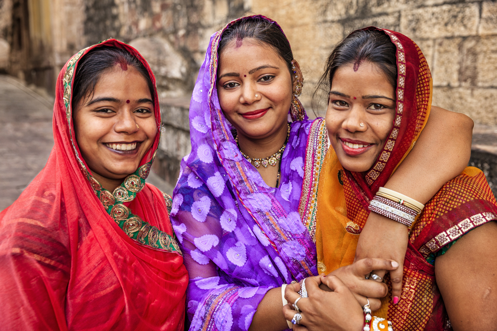

The origin of the Indians

Indian traders came to Malaya as early as the 14th century. Through trading, they introduced Islam
to the
locals, particularly to the Malays. This was also done by marrying into the various royal families,
consequently achieving positions of great influence. It was only in the latter half of the 19th
century that
an influx of Indian immigrants came to Malaya, due to its rapid economic development. The largest
annual flow
into Malaya occurred during the period of 1911-30, when more than 90,000 persons landed each year.
They were
recruited and solicited by the British, mostly as indentured laborers to work on rubber plantations.
A large
number of clerical workers were also brought in from Ceylon, while a number of professionals,
doctors, and
teachers were brought in from India, particularly after World War I. Almost every Indian ethnic
subgroup is
represented in Malaysia. This includes the Tamils, Gujaratis, Malayalis, Punjabi, Sindhis, Pathans,
Telegus,
Kannarese, and the Sri Lankan Tamil and Singhalese. They came from many parts of India and belonged
to
different faiths. Nevertheless, Malaysian Indians are mostly Tamils, forming 87.6 per cent of the
population
in Malaysia.